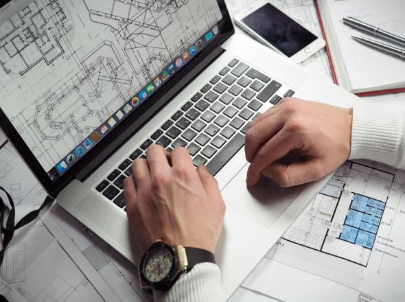

Perfil del Usuario.

Los arquitectos son profesionales que crean y desarrollan diseños para edificios y otras estructuras. Utilizan software especializado de modelado 3D, diseño asistido por computadora (CAD) y visualización arquitectónica. Por tanto, requieren un computador potente que pueda manejar estas aplicaciones sin problemas.
Especificaciones Recomendadas.
Procesador:
- Intel Core i7 o AMD Ryzen 7. Estos procesadores son ideales para manejar aplicaciones de diseño exigentes y realizar cálculos complejos.
RAM:
- 16 GB como mínimo. Para proyectos más grandes y trabajos multitarea, se recomienda 32 GB o más.
Almacenamiento:
- 512 GB SSD para un arranque rápido del sistema operativo y acceso veloz a archivos. Un SSD de 1 TB es ideal si el usuario trabaja con muchos archivos grandes.
Tarjeta gráfica:
- NVIDIA GeForce RTX 3060 o AMD Radeon RX 6700 XT. Estas tarjetas gráficas son adecuadas para el modelado y la renderización 3D.
Pantalla:
- 15-17 pulgadas con resolución 4K (3840 x 2160) o al menos Full HD (1920 x 1080). Una pantalla de alta resolución facilita la visualización de detalles y colores.
Sistema operativo:
- Windows 10/11 es generalmente la opción preferida debido a la compatibilidad con la mayoría del software de diseño.
Consejos Adicionales.
Tabletas gráficas:
- Para un diseño más detallado y preciso, considera invertir en una tableta gráfica, como la Wacom Intuos Pro.
Software de diseño:
- Asegúrate de que el computador tenga la capacidad de instalar y ejecutar software de diseño especializado, como AutoCAD, Revit, SketchUp, 3ds Max, y otros.
Almacenamiento externo:
- Un disco duro externo puede ser útil para realizar copias de seguridad y almacenar archivos grandes.
Necesidades Específicas.
Potencia de procesamiento:
- Los arquitectos utilizan software intensivo en gráficos como AutoCAD, Revit, SketchUp y 3ds Max, lo que requiere un procesador potente y una buena capacidad gráfica.
Capacidad gráfica:
- Una tarjeta gráfica dedicada es esencial para renderizar modelos 3D, visualizar proyectos y trabajar con imágenes de alta resolución.
Rendimiento en multitarea:
- Los arquitectos a menudo trabajan con múltiples aplicaciones abiertas simultáneamente, por lo que necesitan un sistema que pueda manejar esta carga de trabajo.
Almacenamiento rápido y amplio:
- Los archivos de diseño y modelos 3D pueden ocupar mucho espacio, por lo que un disco duro rápido y amplio es crucial para acceder y guardar datos de manera eficiente.
Pantalla de alta calidad:
- La calidad de la pantalla es importante para ver detalles en los diseños y colores. Una buena resolución y precisión de color son fundamentales.
Opciones de Dispositivos.
Laptops:
- Razer Blade 15: Potente y con una pantalla de alta calidad, adecuada para tareas de diseño y renderizado.
- ASUS ROG Zephyrus G14: Compacta y ligera, ofrece un excelente rendimiento gráfico.
- Dell XPS 15: Buen equilibrio entre rendimiento y portabilidad, con una excelente pantalla.
PC de escritorio:
- HP Z2 Mini G5: Estación de trabajo compacta y potente, ideal para aplicaciones de diseño.
- Dell Precision 5820: Ofrece una excelente capacidad de personalización y rendimiento para tareas exigentes.
Monitores externos:
- BenQ PD3220U: Monitor 4K diseñado para diseñadores, con excelente precisión de color.
- LG UltraFine 27UN850-W: Monitor 4K con capacidades de ajuste y buena calidad de imagen.
Nuestra Perspectiva.
Al elegir un computador para arquitectos, es esencial priorizar la potencia de procesamiento, la capacidad gráfica y la calidad de la pantalla. Las especificaciones recomendadas aseguran que los arquitectos puedan realizar sus tareas de diseño de manera eficiente y efectiva, utilizando las herramientas adecuadas para modelado y visualización. Invertir en un buen computador no solo mejora la eficiencia en el trabajo, sino que también permite a los arquitectos explorar su creatividad y llevar a cabo proyectos ambiciosos con confianza.